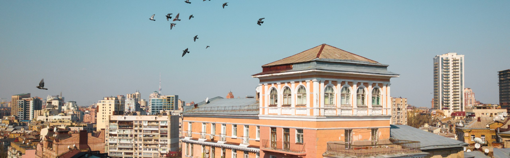

Початок 1920-х років ознаменувався приходом до влади більшовицького режиму. Усе більше людей подавалося в міста, що зумовило житлову кризу. У свою чергу уряд запропонував усім, хто бажав даху над головою, об’єднуватися в житлово-будівельний кооператив (ЖБК). Иншими словами фінансувати будівництво подібних домівок за власний кошт. Подібним кооперативам, згідно з декретом Раднаркому СРСР від 1924 року, надавалися певні пільги.
Тоді ж київські літератори вирішили взяти приклад зі своїх харківських колег, що попрохали спорудити кооператив, який пізніше стане відомим за назвою будинок «Слово». Отож сама ідея побудови спільного житла для письменників виникла на тлі кооперативного руху. Ініціяторами були Іван Ле, Максим Рильський і Семен Скляренко. При реєстрації письменницький ЖБК отримав номер 92 і назву «Роліт». Щоб стати пайовиком, окрім належности до літературної спільноти, потрібно було внести пай у розмірі тисячу карбованців. На той час немала сума, що показувала елітність такої побудови.

ПЕРШИЙ КОРПУС І РОЗЧАРУВАННЯ АРХІТЕКТОРІВ
Спершу місцем для побудови мав стати київський акрополь на розі вулиць Володимирської та Десятинної, але прокуратура заборонила будівництво на цьому місці. Тому новою ділянкою став колишній Святославський яр на розі вулиць Леніна (тепер Богдана Хмельницького) та М. Коцюбинського. Архітектурний проєкт готував відомий український художник і архітектор Василь Кричевський разом зі своїм учнем Петром Костиркою. Стиль – конструктивізм.
Це зображення ілюструє архітектурний проєкт Василя Кричевського.
Початок будівництва припав на 1929-1931 роки. Примусова колективізація потягнула за собою економічну кризу, що спричинило скорочення фінансування будівництва і неодноразову зміну початкового архітектурного пляну. В остаточному варіянті від задумів Кричевського не залишилося майже нічого. «Коли проєктування вже добігало кінця, – відзначав пасинок Кричевського Вадим Павловський, – уряд переглянув і сильно зменшив норми будівельного статуту, за якими визначаються розміри частин будинку і мешкання, височина стелі, ширина коридорів, розміри дверей, вікон і так далі». Від свого автора будівля отримає прізвисько «надмогильний пам'ятник того періоду». Відбулися наступні зміни: коридори стали вужчими, стеля – нижчою, вікна – меншими, а кімнати – тіснішими. Особливо незручною деталлю була наявність маленьких кухонь. Планувалося, що мешканці харчуватимуться в їдальні, розташованій у підвалі. Вона працювала кілька років, їжу видавали, але їсти доводилося все одно в квартирах. Через перепланування саму їдальню не відкрили. Хоча була можливість принести свої продукти і замовити страву. Попри те, що остаточний задум міська рада затвердила 31-го року, будинок усе одно зазнавав істотних змін під час будівництва.
Керував будівництвом Іван Ле. Є відомості, що він також вводив певні поправки в проєкт для письменницьких потреб. «Повитягаємо наших поетів і романістів з їхніх комунальних конур у пристойні окремі квартири», – говорив він і додавав, посміхаючись: «Може, краще писати будуть.»
І ось нарешті розпочалося будівництво. Зробили котлован для фундаменту і… Все різко спинилося… Серед причин висловили такі: або недостатньо робітників, або будівельних матеріялів. Докія Гуменна, одна з пайовиків Роліту, згадує: «Роліт будувався дуже помалу. Не вистачає робочої сили чи фінансів, то на цей суботник закликаються члени-пайовики. Носила там на суботнику цеглу разом із іншими письменниками та уявляла, як будинок виглядатиме, та намагалась здогадатися, котре це саме моє мешкання.» Та попри все будівництво, хоч і повільно, але продовжувалося. Письменники приходили допомагати власними силами, аби пришвидшити процес. Найчастіше подібні акції влаштовували по суботах, звідки й пішла назва «суботники». Та нерідко літератори приходили й у инші дні. Про суботники також згадує Кіра Городецька, дружина О. Кундзіча: «По дерев'яних сходинках підносили будівельникам цеглу та інший будівельний матеріал на своїх плечах.» Тоді ще не було підйомних кранів, тому доводилося пісок і цеглу самотужки тягнути на третій, четвертий, п’ятий поверхи. Для цього давали торби, схожі на рюкзаки: вдягаєш лямки, і несеш. Проте такими темпами ні за рік, ні за два, ні навіть за три не було видно кінця краю.
Невідомо, скільки подібне могло продовжуватися, якби не одна переломна подія. 21 січня 1934 року на XII з’їзді КПБУ та ЦВК УРСР постановили перенести столицю України з Харкова до Києва. Окрім державних і партійних установ до столиці переїхав Оргкомітет Спілки радянських письменників, яка тоді лише створювалася, разом з видавництвами республіканських газет та журналів. Тоді ж будівництво Роліту потрапило під спостережливе око ЦК і різко стало негайною справою.
Однак як би швидко не намагалися завершити зведення кооперативу до переїзду уряду з Харкова до Києва, але 24 червня 1934, він усе ще не був завершений. Уряд переїхав, а от письменники – ні. У серпні вони ненадовго навідалися в Київ, щоб завершити I Всеукраїнський з’їзд письменників, розпочатий ще 17 червня в Харкові. Заразом вирішили подивитися на свої майбутні домівки. Поглянули і повернулися додому. Леонід Первомайський наводить такий факт: «Керівництво письменницької спілки, не маючи змоги далі очікувати, коли вже завершать Роліт, у листопаді переїхало до Києва і поселилося в столичному готелі “Континенталь”.» «Я часто навідувався до незакінченого роліту, – продовжує пожилець “Континенталю” Леонід Первомайський. – Будівництво просувалося загрозливо повільно. Тільки-тільки почалися внутрішні роботи, скрізь стояли діжки з вапном, навішували двері, електрики довбали шлямбурами стіни.»
У будинок почали заселятися лише в грудні 1934 року. Хоча навіть тоді все не було повністю завершено. Наприклад, шахти для ліфтів звели, але самих ліфтів не було (вони з’являться лише всередині 50-х років). Незважаючи на певні незручності, жити в будинку якось можна було. 31 жовтня голова Спілки радянських письменників України Іван Кулик видав розпорядження виписувати ордери на квартири. На початку листопада директор будинку Леонід Лівшиць поставив свій підпис на ордерах і в грудні перші мешканці в’їхали в нові оселі. І мало кому було відомо, що спершу будівля мала виглядати зовсім по-иншому.
Замість запланованих 56-ти квартир в споруді було – 60. Через те, що до київських митців приєдналися ще харківські, то місця на всіх не вистачило б. Тому із підвальних приміщень п’ятого під’їзду зробили додаткові квартири. Аби в новоутворені квартири входило сонячне світло, було вирішено спиляти частину яру, яка безпосередньо прилягала до підвалу п'ятого під'їзду з боку вулиці, і прорубати в нових помешканнях вікна. Нашвидкоруч зробили додатковий вхід.
У грудні 1934 та в січні 1935 на ролітівському подвір’ї одна за одною приїжджали вантажівки. Новосельці вивантажували меблі, книги, теки з рукописами тощо. Деякі прибулі, особливо сім’ї харківських письменників, вперше бачили цю будівлю й з цікавістю її розглядали. З’їжджалися абсолютно різні робітники літератури: поети, прозаїки, драматурги, критики, літературознавці, редактори, навіть видавці та цензори.
Хоча в Київ до кінця не приїхала всього кілька родин, але кількість новоселів була велика. Мешканців із Харкова (протягом наступних кількох років) прийшло приблизно з тридцять осіб. Усього ж на перших порах в будинку мешкало близько 100 письменників, а також деякі й не письменники.
НОВИЙ «ПАНСЬКИЙ» КОРПУС
Проєкт другого корпусу Роліту. Автор: Микола Саббнєв
Через не зовсім зручні умови було вирішено збудувати ще один корпус для письменницької еліти, до якого Кричевський і Костирко не мають жодного стосунку. Другу чергу будували за проєктом молодого київського архітектора Миколи Сдобнєва. Цього разу архітектор вибрав инший стиль – класицизм.
Новий елітний корпус Роліту після побудови
Початку спорудження заважав невеликий будинок на вулиці Б. Хмельницького. Моторошною знахідкою там став скелет жінки, але справу не порушили, бо сталася містична подія за декілька десятиліть до цього. Під час будівництва Сдобнєв пильно стежив за процесом і щоразу додавав якісь нові деталі. Семиповерховий корпус мав один під’їзд і 14 пишних квартир. Саме на фасаді цього корпусу, виконаного з коростенського граніту, встановлені всі меморіяльні дошки. Вхід до під'їзду з вулиці, просторий вестибюль із колонами, ліфт (старий корпус Роліту тоді не мав ліфтів), високі стелі у квартирах (4 метри). Мешкання у правому крилі під'їзду – п’ятикімнатні, у лівому – чотирикімнатні. Найістотнішою відмінністю було передбачення наявности прислуги в квартирах, тому в кожній з них запроєктовано окрему кімнату для хатньої робітниці, а з кухні обладнано чорне хід на подвір'я. Звичайно, значно скромніший від основної сходової клітки й без ліфта. На додачу дах споруди оснастили мансардою, де Сдобнєв планував розташувати літературну кав’ярню, але задум не вдався. Пізніше деякі письменники бажали собі отримати це приміщення, але архітектор відмовляв у подібних проханнях. У 1954 р. цю мансарду сподобали собі київські художники для своїх майстерень.
1939 року будівництво елітного корпусу завершилося. Туди переселяться П. Тичина, М. Рильський, А. Головко, П. Панч, О. Копиленко, П. Усенко, Н. Рибак та инші. Їхнім сусідом став Ю. Яновський, який тоді лише переїхав з Харкова. Вересень 39-го став завершенням побудови комплексу.
ЧАСИ БУЛИ НЕЛЕГКІ
З історії добре відомо, що часи, коли в Роліті вирувало мистецьке життя, було непростими. За майстрами слова пильного стежело НКВД. Траплялося мешканці одне на одного могли писати доноси. «З кінця 1935-го письменники жили в постійному страху. У будь-який момент могли прийти і забрати, без всяких пояснень, – згадує Олег Іванович Микитенко. – По будинку поповзли плітки, наговори, сусіди стали один на одного доноси писати – цілу стопку знайшов в архівах КДБ. Кожен сидів в своїй квартирі і боявся в гості до сусіда піти, а зустрівшись на вулиці, сказати зайве слово. У 1937 році раптом застрелився російський письменник Вадим Охременко. Він жив поверхом вище за нас, в 54-ій квартирі. Охременко покінчив життя самогубством. У будинку стали переказувати різні версії причин самогубства. Говорили, що зробив він це на грунті ревнощів, але була і інша причина: Вадима Охременко примушували доносити на Максима Рильського, а він цього не міг робити».
У часи Другої світової війни Роліт фактично був порожнім. Єдині літератори, що залишилися, добровільно йшли на фронт, поки їхні сім’ї перебували в евакуації в Уфі.
Зараз на Роліті встановлено 29 пам’ятних дошок. Першу відкрили в 1958 р., останню – 2011.